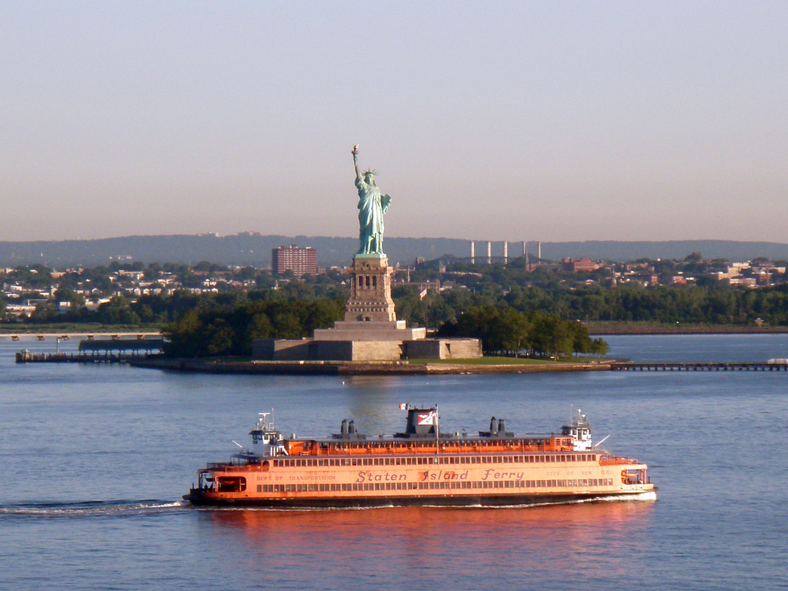

Que Visitar en New York?
by Nosotros
Hace 1 hora Nuevo!Introducción
¿Qué ver en Nueva York en un primer viaje? Mirando el mapa de la Gran Manzana, seguro que te surgirán mil dudas: ¿qué es lo indispensable? ¿Dónde están los lugares más típicos?. No te preocupes, hemos creado esta lista con las mejores cosas que hacer en Nueva York en una primera visita.
1. Pasea por Central Park
Recorre los senderos a pie o en bicicleta, túmbate en el Sheep Meadow con un pícnic, rema por el lago, emociónate en la fuente de Bethesda… Las posibilidades son infinitas, pero algo está claro: una de las cosas que tienes que hacer en Nueva York sí o sí es perderte una o más veces por Central Park, el parque más querido por sus habitantes… ¡Y un oasis espectacular en mitad de la jungla de asfalto!
Mientras que otros lugares tienden a quedarse estancados, Nueva York siempre continúa evolucionando.
2. Sube al Top of the Rock
Dale un descanso a tu cuello y, en lugar de levantar la vista hacia los rascacielos, sube a uno de los observatorios de Nueva York y contémplalos cara a cara. ¡La panorámica de la Gran Manzana desde lo alto es inolvidable! Comienza por el maravilloso Top of the Rock, en el mítico Rockefeller Center, y acertarás. Aunque el Empire State Building, el Edge y el One World también te dejarán boquiabierto.
3. Sube al Ferry de Staten Island Popular!
¿Quieres verle el rostro a la Estatua de la Libertad sin pagar ni un dólar? Súbete al ferry gratuito de Staten Island. Conforme se aleja de Manhattan, tienes unas vistas preciosas del Downtown, aún más alucinantes al atardecer o al anochecer, cuando los rascacielos se iluminan. Y, aunque este ferry no para en Liberty Island, sí que verás la Estatua de la Libertad (y lo bien que se conserva para su edad) más cerca que desde otros lugares de Nueva York.
4. Recorre la High Line y sube al Vessel
Lo que en el pasado era una vía de tren elevada sobre las calles de Manhattan es hoy la High Line, un jardín de varios kilómetros donde entre los raíles crecen flores. Recórrela y disfruta de la naturaleza entre rascacielos, del arte y el buen ambiente. La High Line te llevará hasta el barrio de Hudson Yards, donde puedes subir a la futurista escultura del Vessel (gratis) o al nuevo observatorio Edge..
5. Visita un Museo (o varios!)
El Met, el MoMa o Museo de Historia Natural son auténticos tesoros de Nueva York: podrías pasar días enteros recorriéndolos y todavía te quedarían rincones y obras por descubrir. Pero, si tienes tiempo, la ciudad está llena de museos increíbles: el Whitney, el Guggenheim, los Cloisters, el Museo Intrepid del Aire y el Espacio, la Morgan Library… ¡Por nombrar solo algunos!
6. Siente el pulso de Times Square
En ningún lugar de Nueva York el ritmo es tan frenético como en Times Square. Las pantallas proyectan anuncios luminosos sin cesar, las multitudes de turistas ocupan cada centímetro, los vendedores y artistas callejeros no descansan… Pasar por Times Square y sentir su pulso y su bullicio, sobre todo de noche, es una de las cosas que hacer en Nueva York sí o sí. Pero lo de regresar o no… ¡ya lo dejamos a tu elección!
7. Vive un Musical de Broadway
En los teatros de Times Square y de Broadway, noche tras noche se representan musicales míticos y obras de teatro que emocionan al público. Por eso, entre las cosas que hacer en Nueva York te recomendamos sin dudar ir a un musical de Broadway, una experiencia increíble.
8. Emocionate en Grand Central Terminal
Entrar a Grand Central Terminal y emocionarte con la grandeza de su vestíbulo es una de las cosas que no puedes perderte en Nueva York. El tránsito de gente hacia los andenes, el techo y sus constelaciones, el mercado de alimentación, las galerías abovedadas… ¡Grand Central es maravillosa! Y, muy cerca, tienes el también precioso edificio Chrysler, cuyo vestíbulo puede visitarse.

9. Cruza el Puente de Brooklyn y recorre Dumbo
Cruzar el puente más famoso de Nueva York es indispensable, aunque mejor hacerlo pronto, porque durante el día se llena de gente. Una vez llegues a Brooklyn, podrás recorrer las calles del barrio de Dumbo y disfrutar de las fabulosas vistas del skyline de Manhattan desde el río East River o desde el mercado Time Out. Si prefieres cruzar de Manhattan a Brooklyn sin multitudes, también tendrás buenas vistas desde el puente de Manhattan y el Williamsburg Bridge.
10. Haz un Tour por la ciudad
Elige entre las muchas excursiones que tienes a tu disposición y disfruta descubriendo Nueva York de la mano de un experto: puedes optar por paseos a pie por distintos barrios, por el tour de contrastes, por un free tour, por los tours por escenarios de cine… ¿Y qué te parecería sobrevolar la Gran Manzana como un pájaro? ¡El paseo en helicóptero por Nueva York es una de las experiencias más asombrosas que puedes vivir!
There is something in the New York air that makes sleep useless.
11. Relajate en Bryant Park
Bryant Park no puede faltar en tu lista de cosas que hacer en Nueva York: en medio del trajín de Manhattan, es un oasis verde al que los neoyorquinos acuden para comer, descansar y disfrutar. En verano puedes ver una peli entre rascacielos en el ciclo de cine al aire libre, y, en invierno, pasear por el precioso mercadillo navideño, ver el árbol de Navidad encendido y patinar sobre hielo. Además, justo al lado tienes la sede de la New York Public Library de la 5ª Avenida, otro de los lugares imprescindibles de la ciudad.

12. Redescubre el World Trade Center
El World Trade Center es una de las zonas de Nueva York que más ha cambiado en los últimos años, y seguro que conseguirá sorprenderte y conmoverte. Por un lado, los monumentos y museos recuerdan a los desaparecidos en el trágico 11-S. Pero, por el otro, el área no deja de avanzar, con rascacielos como el observatorio One World o la futurista estación y centro comercial Oculus.
13. Entra al Chelsea Market
Para escapar de un día de lluvia en Nueva York, para zamparte un buen bogavante, para descubrir dónde se inventaron las galletas Oreo, para perderte entre decenas de tiendas originales… ¡Cualquier excusa es buena para visitar el mercado de Chelsea! Y no es el único mercado de Manhattan donde comer: en el vecino Gansevoort Market, en el Gotham West Market o en el Canal St Market, por poner solo algunos ejemplos, también podrás elegir entre puestos de comida estupendos.

14. Ve a un partido de la NBA(u otro deporte)
Ver un partido de la NBA, de béisbol, de hockey sobre hielo o de fútbol americano en Nueva York es una experiencia típica que disfrutarás al máximo incluso si los deportes no te apasionan. Desde el momento en el que suena el himno hasta que los aficionados se marchan a casa, ¡en el estadio vivirás una experiencia animadísima y 100 % americana!
15. Sube a la Estatua de La Liberta Imperdible!
Una de las cosas más típicas que hacer en Nueva York es visitar la Estatua de la Libertad. Cuando bajes del ferry en Liberty Island, no solo la tendrás cara a cara, sino que incluso podrás subir al pedestal o a la corona y disfrutar de las vistas de Manhattan. Y, después, el mismo ferry te acercará a Ellis Island, donde podrás disfrutar del emotivo Museo de la Inmigración. Aun así, te lo recomendamos solo si tienes más de una semana en la ciudad, ya que es un lugar muy concurrido y se tardan varias horas en visitar ambas islas.
16. Recorre la 5ta Avenidad hasta el Rockefeller Center
La avenida más emblemática de Nueva York es tan extensa que tiene tramos de todo tipo: residenciales, tranquilos, comerciales… Aun así, el trozo mítico es el que va de Central Park al Rockefeller Center, donde se juntan el hotel Plaza, tiendas tan selectas como Tiffany’s (la tienda de Desayuno con diamantes) o Saks 5th Ave. También allí encontrarás locales alucinantes, como el de Apple o el de Abercrombie, y la majestuosa catedral de St Patrick.
17. Vuelvete loco de compras o en los outlets
Las tiendas de la ciudad son tan tentadoras, que seguro que en algún momento caerás en sus redes: electrónica, moda, papelería, golosinas… ¡Sigue el enlace y conoce las mejores tiendas de Nueva York! Además, si te apetece una jornada intensiva buscando chollos en ropa, una buena opción es visitar alguno de los outlets de Nueva York, como Woodbury Common, Jersey Gardens o Empire Outlets, en Staten Island.
18. Vive el ambiente del Village y Washington Square
Paseando por el Greenwich Village, con sus mil y un restaurantes, pubs, tiendas y clubes de música, te empaparás de una faceta alegre y auténtica de Nueva York. Allí encontrarás una de las plazas más carismáticas de la ciudad, Washington Square. No solo verás el famoso arco, sino que también disfrutarás de los artistas callejeros, los músicos y el buen ambiente que siempre inunda la plaza. ¡Un lugar genial para un descanso!
19. Comete una buena Hamburguesa o plato tipico
Algo que tienes que hacer sí o sí en Nueva York es hincarle el diente a sus platos típicos: una buena hamburguesa, un pizza slice, un bagel con cream cheese… Si llevas un goloso incurable dentro, también tienes que probar los mejores dónuts o los mejores cupcakes. Y, para terminar el día con buen pie, ¿qué tal un cóctel en un rooftop con vistas increíbles?
20. Guarda Tiempo para Brooklyn y los demas distritos
Aunque en un primer viaje tendrás mucho que hacer en Manhattan y sus barrios, la isla es solo uno de los 5 distritos de la ciudad (Brooklyn, Queens, Staten Island, el Bronx y Manhattan). Como te contamos en los errores que cometemos al viajar a Nueva York, más allá de la Gran Manzana encontrarás una ciudad auténtica y que poco tiene que ver con los rascacielos. Te recomendamos empezar por Brooklyn, un distrito con barrios tan modernos como Williamsburg o Dumbo, y otros con tanto encanto como Park Slope, Cobble Hill, Carroll Gardens, Greenpoint… Otra opción para una primera aproximación es el Tour de Contrastes de Nueva York (o el Tour de Contrastes VIP).
Cien veces he pensado que Nueva York es una catástrofe, y 50 veces que es una hermosa catástrofe.
Comentarios

Daniel
Donde puedo comprar esta página??.
Agustina
Excelente Informacion!.
Juan
Gracias! Me ayudaron muchisimo con mi itinerario de viaje.
Eugenia
A mi tambien. Increible las imagenes e informacion que nos brindan
Rita
Desde el primer viaje que hice que utilizo su blog. Me sumo a estas personas con mis mayores agradecimientos!.
Deja un comentario:
Suscribite al blog
Post Recientes
Mapa Interactivo
Aprovecha Nuestros Descuentos!